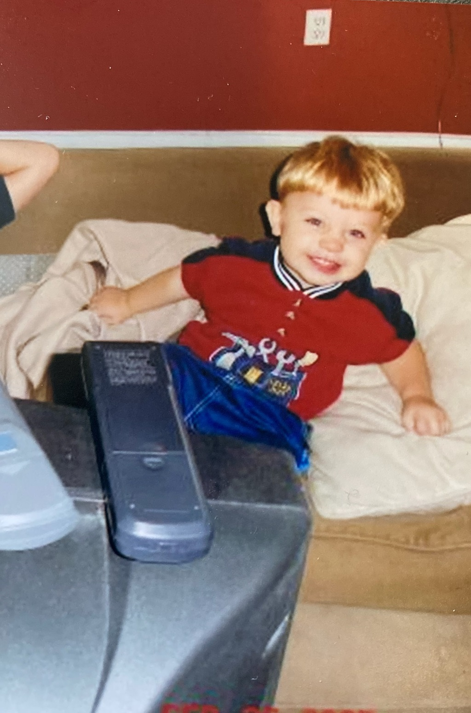

About me

My name is Adam Kuk (pronounced "cook") and web development is my passion.
Ever since my inception, my eyes were glued to the screens
of televisions, computers, and later mobile phones.
As I grew older, I found myself interested in the
science and mindset that goes into developing
the funny graphics and text we see on screens.
I am also an engineering student at [REDACTED], my goal is to become
a successful software engineer through hard work.
I will use my troubleshooting and logical skills
to solve any problem I am faced with, and I aspire
to use my skills to their fullest potential.